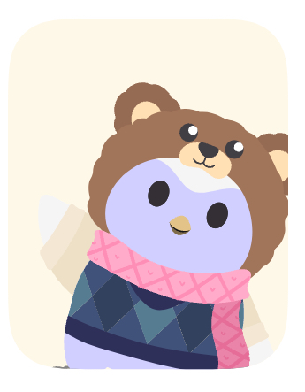
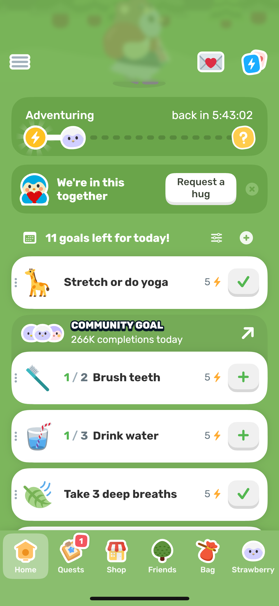
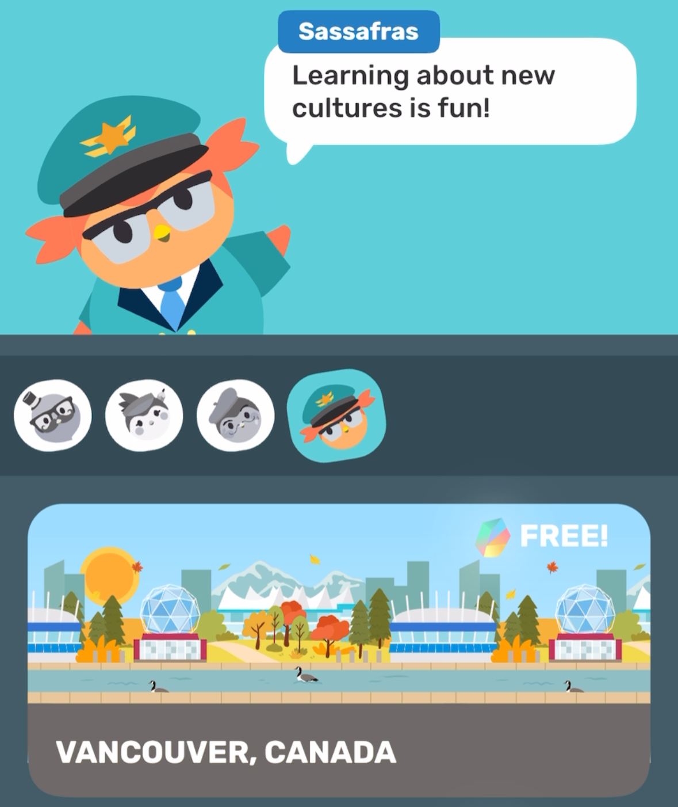

Content
Finch is an easy to use app, and has a lot of content to keep its users enterteined. The "playable" aspects of the app are the completion of the individual's goals, which will progress the pet's "adventure"- when the pet isn't interactive- and make it so the player can interact with the pet again.
There are "travels" which the player can complete through either a subscription of the app, or through free trials.
The app also encourages keeping streaks, and will notify players daily to log into the app so that they don't "lose" it.
These serve as further incentives for the player to keep using the app.


